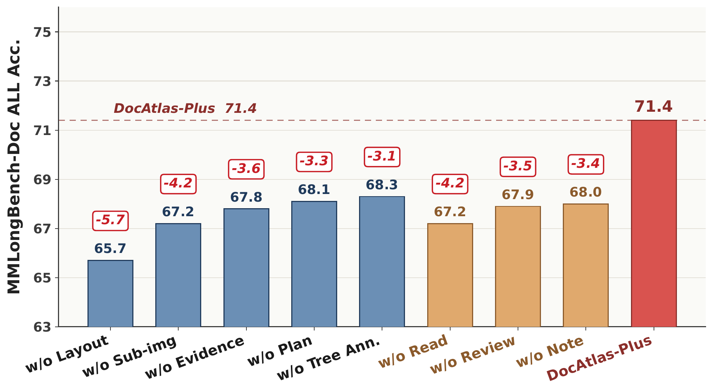
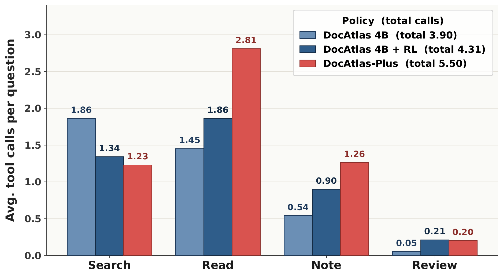
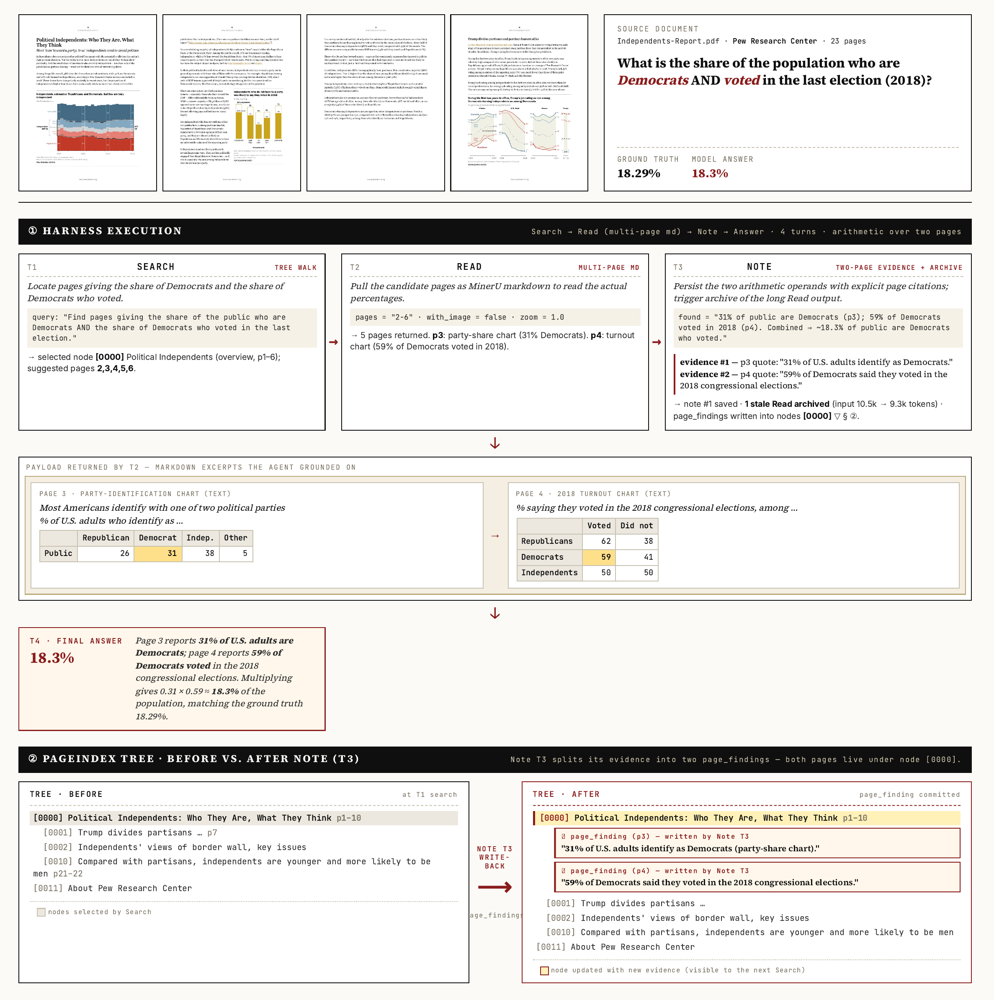

A document becomes more useful as the agent interacts with it
DocAtlas turns long-document understanding into a stateful process: search proposes where to look, reading exposes multimodal evidence, notes write findings back, and review recalls what matters next.
MMLongBench-Doc accuracy
GPT-5.4 with DocAtlas exceeds the 65.8% human-expert reference.
Compact policy after RL
A Qwen3.5-4B policy improves from 54.4% direct input to 63.7%.
FinRAGBench-V gain
GPT-5.4 improves from 55.1 to 75.6 LLM-as-judge.
Tools in one environment
Search, Read, Note, and Review can be selected in any order.
Three benchmarks, one interaction strategy
Select a benchmark to compare DocAtlas with direct long-context input.
MMLongBench-Doc
Why long documents should be mutable state
Static retrieval commits before reasoning begins. DocAtlas lets evidence change what the agent can find and do next.
The initial tree contains titles, page ranges, and summaries. When the agent records a source-grounded note, that finding updates both structured memory and the document tree. Later search operates on an enriched state rather than the same frozen index.
Search
Navigate the visual-aware tree.
Read
Inspect selected multimodal pages.
Note
Write grounded findings back.
Review
Recall evidence when it matters.
One document harness for inference and end-to-end RL
The same environment supports frontier VLM agents at inference time and trains compact open policies with outcome rewards.

Search the tree
Retrieve candidate regions from hierarchy, summaries, and prior findings.
Read selectively
Choose the pages and multimodal views that enter active context.
Write grounded notes
Compress evidence with source attribution and update the tree.
Review on demand
Retrieve relevant findings from structured memory before answering.
Search broadly. Read selectively.
Search is optimized for evidence recall; Read converts those candidates into a compact, high-precision evidence set.
Full Search All-Hit
Coverage of all gold evidence pages before selective reading.
Pages after Full Read
The agent consumes only a small subset of candidate pages.
Tree-annotation gain
All-Hit improvement from writing findings back into the tree.
| Method | Avg. pages | All-Hit | Page F1 |
|---|---|---|---|
| ColQwen top-2 | 2.00 | 64.12 | 38.75 |
| ColQwen top-6 | 6.00 | 76.42 | 24.36 |
| ColQwen top-10 | 10.00 | 83.60 | 18.38 |
| Full Search | 16.65 | 87.45 | 38.33 |
| Search w/o Annotation | 16.94 | 80.05 | 29.40 |
| First Read | 2.67 | 59.90 | 56.04 |
| Full Read | 5.79 | 78.01 | 58.99 |
| Read w/o Annotation | 6.01 | 76.93 | 58.17 |
Mutable-state interaction improves frontier and compact agents
DocAtlas reaches 71.4% on MMLongBench-Doc with GPT-5.4 and trains a 4B policy to 63.7% in the same environment.
Above the human reference
DocAtlas + GPT-5.4 reaches 71.4%, compared with 65.8% for human experts.
One harness, two scales
The same tools support frontier inference and end-to-end RL for compact VLMs.
Gains transfer across benchmarks
GPT-5.4 improves by 20.5 points on FinRAGBench-V and 11.9 on LongDocURL.
What changes when state is mutable
Component ablations and tool allocation show that performance comes from the interaction loop rather than a single retrieval call.


Inside a complete DocAtlas trajectory
Follow how the agent searches, reads, records source-grounded evidence, reviews memory, and produces a final answer.
Multi-hop evidence gathering

Complete results across 27 systems and three benchmarks
The full table retains evidence-type breakdowns, aggregate metrics, compact-policy RL, and results on FinRAGBench-V and LongDocURL.
Best non-human values in the selected view are highlighted in red; second-best values are blue. Missing results are shown as dashes.